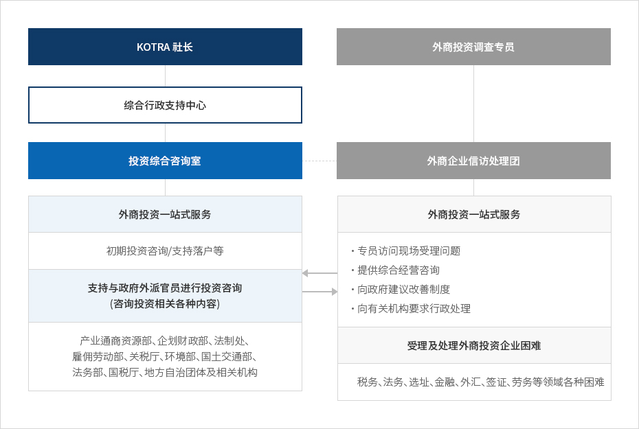
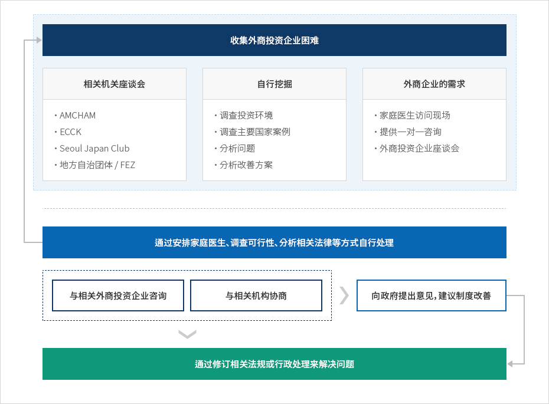

信访业务（外商投资调查专员）
- Home
- IK服务
- 主要工作
- 信访业务（外商投资调查专员）
外商投资调查专员简介
外商投资调查专员事务所向在韩外商投资企业提供密切型跟踪支持和信访服务。自1999年成立以来，外商投资调查专员事务所致力于解决外商投资企业在韩经营时所面临的各种困难。通过下设由总统委任，由金融、会计、法律、选址、税务、劳务等各领域资深专家委员组成的外商企业信访处理团，持续支持外商投资企业，营造稳定的外商投资环境。
韩国的外商投资调查专员制度备受UNCTAD、APEC等国际社会的广泛关注，被评价为促进跨国投资、预防投资者—国家争端（ISD）的成功案例，也被列入俄罗斯、哈萨克斯坦、巴西、越南等多个国家的标杆学习项目。外商投资调查专员事务所基于多年累积的丰富案例，为预防问题发生、改善投资环境而竭尽全力。
立即查看外商投资调查专员
组织结构


- KOTRA 社长
- 综合行政支持中心
- 投资综合咨询室
- 外商投资一站式服务初期投资咨询/ / 支持落户等
- 支持与政府外派官员进行投资咨询 (咨询投资相关各种内容) 产业通商资源部、企划财政部、法制处、 雇佣劳动部、关税厅、环境部、国土交通部、 法务部、国税、地方自治团体及相关机构
- 外商投资调查专员
- 外商企业信访处理团
-
受理及处理外商投资企业困难
- 专员访问现场受理问题
- 提供综合经营咨询
- 向政府建议改善制度
- 向有关机构要求行政处理
- 受理及处理外商投资企业困难 税务、法务、选址、金融、外汇、签证、劳务等领域各种困难

支持流程

收集外商投资企业困难
相关迴鼓座谈会
- AMCHAM
- ECCK
- Seoul Japan Club
- 地方自治团体 / FEZ
自行挖掘
- 调查投资环境
- 调查主要国家案例
- 分析问题
- 分析改善方案
外商企业的需求
- 家庭医生访问现场
- 提供一对一咨询
- 外商投资企业座谈会
通过安排家庭医生、调查可行性、分析相关法律等方式自行处理
- 与相关外商投资企业咨询
- 与相关机构协商
- 向政府提出意见,建议制度改善
- 通过修订相关法规或行政处理来解决问题

家庭医生服务
-
家庭医生由外商投资调查专员机构旗下的外商投资企业信访处理团专员组成。
- 由法务（2）、金融（2）、税务（1）、会计（1）、选址（1）、人事及劳务（1）、IT及知识产权（1）、生物技术（1）等10名专员组成。
- 各产业领域及各地区的专员访问企业，听取困难，执行处理业务。
-
运营家庭医生热线及上访服务
- 制定各家庭医生的负责地区和外商投资企业，通过建立家庭医生-地方自治团体-企业之间的热线，致力于及时发现和处理困难。
- 产业及地区专员访问外商投资企业，听取和处理困难。